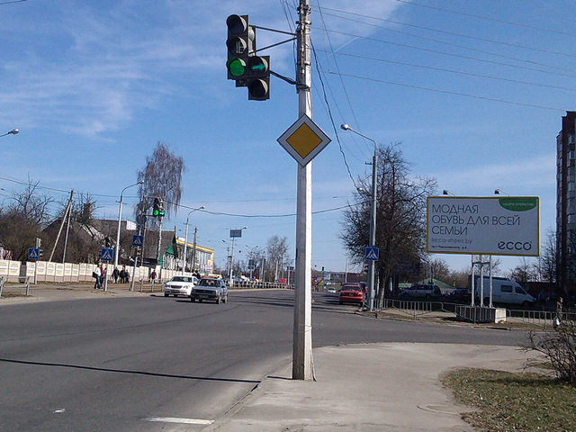
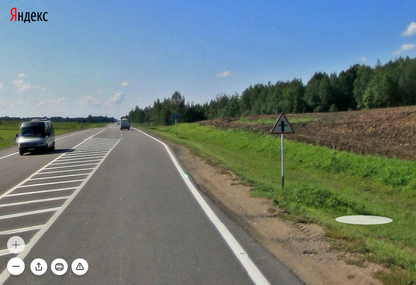
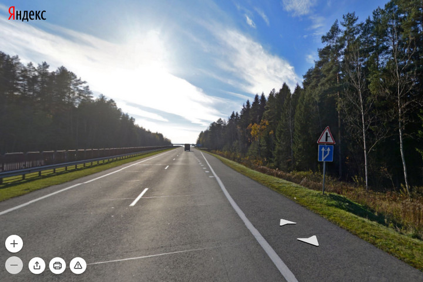
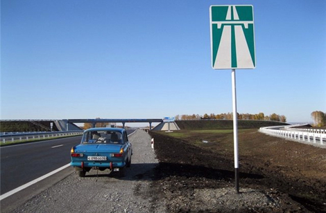
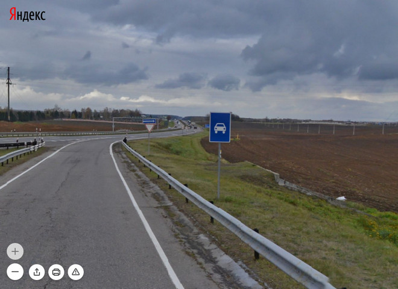
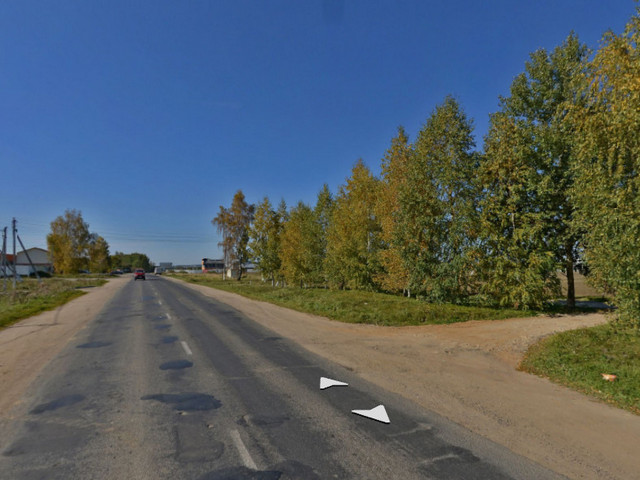
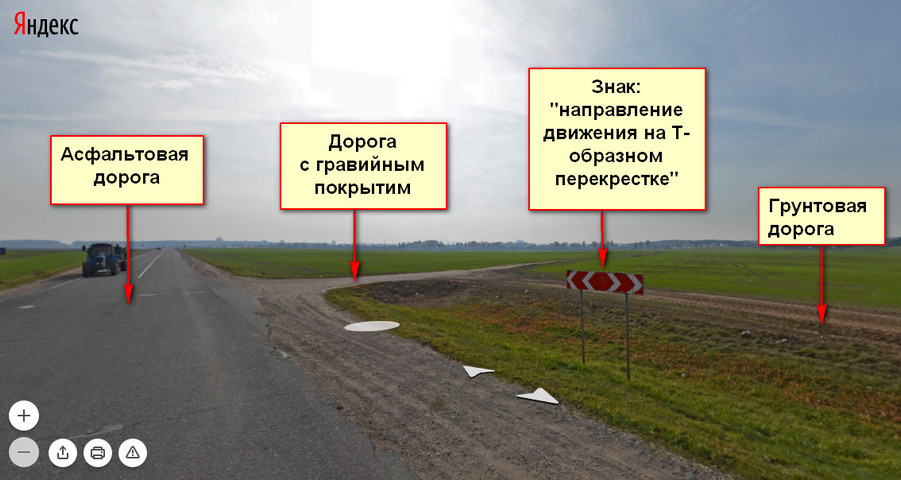
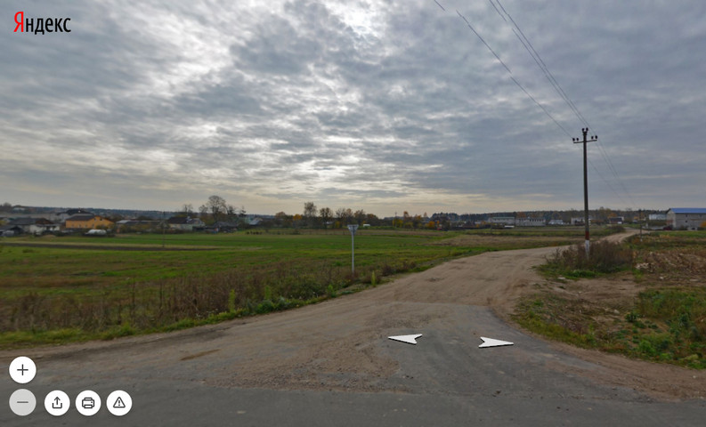
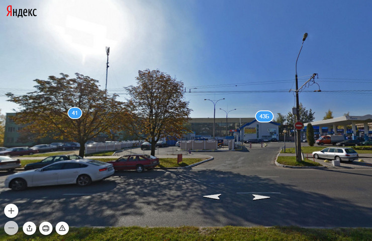
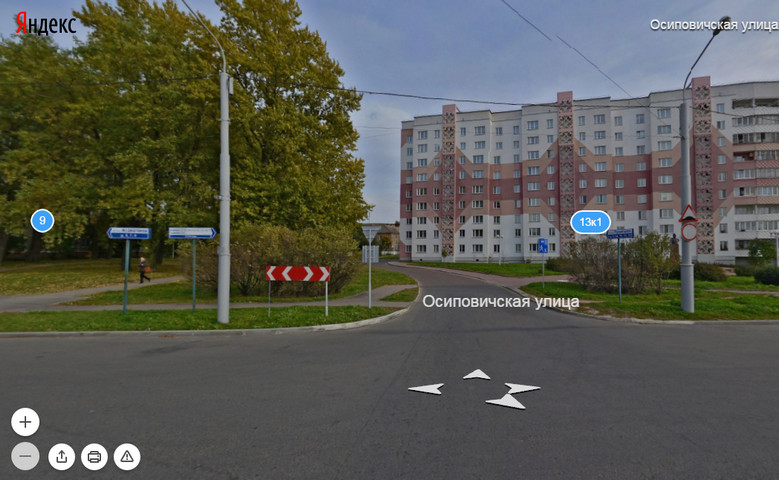

главная дорога — дорога, обозначенная дорожными знаками "Главная дорога", "Пересечение со второстепенной дорогой", "Примыкание второстепенной дороги", "Автомагистраль" или "Дорога для автомобилей", по отношению к пересекаемой (примыкающей), дорога с усовершенствованным покрытием по отношению к дороге без такого покрытия, дорога с гравийным покрытием по отношению к грунтовой, любая дорога по отношению к выездам с прилегающих территорий или жилых зон. Наличие на второстепенной дороге непосредственно перед перекрестком участка с покрытием (усовершенствованным или гравийным) не делает ее равной по значению с пересекаемой;
Это один из важнейший пунктов ПДД. Изучите его внимательно. Это важно как при реальной езде по дорогам, так и в тестах по данной теме много вопросов.
Обратите внимание, что дорога является главной именно по отношению к другой дороге. Частая ошибка новичков - "если я на главной дороге, то мне все уступают". Это не так - уступают только со второстепенных дорог, навстречу вам будут ехать машины тоже по главной дороге. И, к примеру, поворачивая налево, вы должны уступить встречным транспортным средствам, тоже едущим по главной дороге.

Главная дорога, обозначенная дорожным знаком "Главная дорога".
Фото автора.

Главная дорога, обозначенная дорожным знаком "Пересечение со второстепенной дорогой".
Превью панорамы сайта
Яндекс.Карты.

Главная дорога, обозначенная дорожным знаком "Примыкание второстепенной дороги".
Превью панорамы сайта
Яндекс.Карты.

Главная дорога, обозначенная дорожным знаком "Автомагистраль".
Фото с сайта autoass.ru.

Знак "Дорога для автомобилей", но дорога не является главной.
Превью панорамы сайта
Яндекс.Карты.
Обратите внимание, что знак "Дорога для автомобилей" установлен до перекрестка, а следом за ним установлен
знак "Уступи дорогу".
На наш взгляд, это странность в организации дорожного движения: знак "Дорога для автомобилей" следовало бы
установить за перекрестком.

Главная дорога: дорога с усовершенствованным (асфальтовым) покрытием по отношению к дороге без такого покрытия.
Превью панорамы сайта
Яндекс.Карты.

Главная дорога: дорога с гравийным покрытием по отношению к грунтовой.
Превью панорамы сайта
Яндекс.Карты.

Второстепенная дорога с участком усовершенствованного (асфальтового) покрытия непосредственно перед
перекрестком с главной дорогой (с афсальтовым покрытием).
Превью панорамы сайта
Яндекс.Карты.
Если присмотреться, то на выезде со второстепенной дороги установлен знак "Уступить дорогу" (виден с обратной стороны),
который дополнительно информирует о необходимости уступить дорогу.

Главная дорога: дорога по отношению к выезду с прилегающей территории.
Превью панорамы сайта
Яндекс.Карты.

Главная дорога: дорога по отношению к выезду с жилой зоны.
Превью панорамы сайта
Яндекс.Карты.